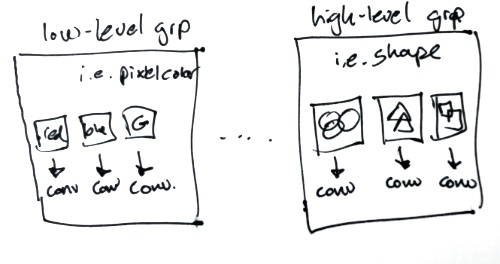

ResNeSt
Takeway from this YouTube is that manually designed architecture are better than neural architecture search, which includes EfficientNet.
Instead of the linearity of ResNet, it nests the blocks into groups, and then subgroups:

Definitions
Semantic Segmentation

Instance segmentation